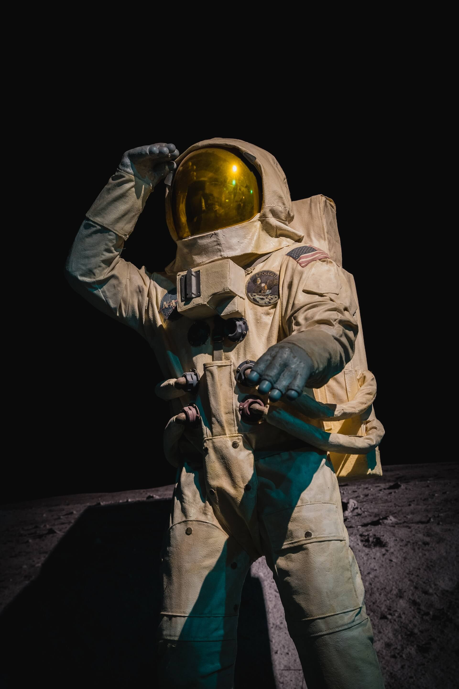

Chris Hadfield
Background: Canadian astronaut and former commander of the International Space Station (ISS).
Notable: Gained popularity for sharing his experiences on social media and performing music in space.
Background: Canadian astronaut and former commander of the International Space Station (ISS).
Notable: Gained popularity for sharing his experiences on social media and performing music in space.
Background: American astronaut and the first female Space Shuttle pilot and commander.
Notable: Led the STS-93 mission, deploying the Chandra X-ray Observatory, and commanded the STS-114 "Return to Flight" mission.
Background: Japanese astronaut and engineer, Koichi Wakata has a distinguished career in space exploration.
Notable: Holds the record for the longest cumulative time spent in space by a Japanese astronaut. Contributed to various space missions, including assembling the ISS.
Background: British astronaut and former European Space Agency (ESA) astronaut.
Notable: Conducted numerous scientific experiments on the ISS during his Principia mission and engaged with the public through educational activities.